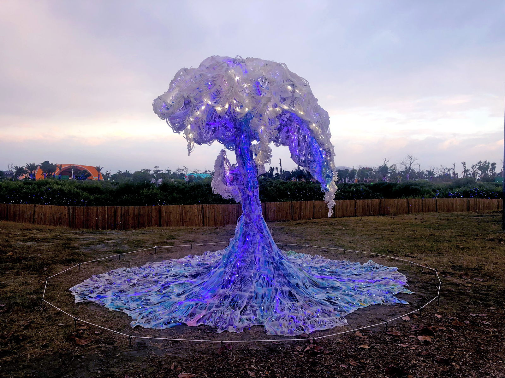
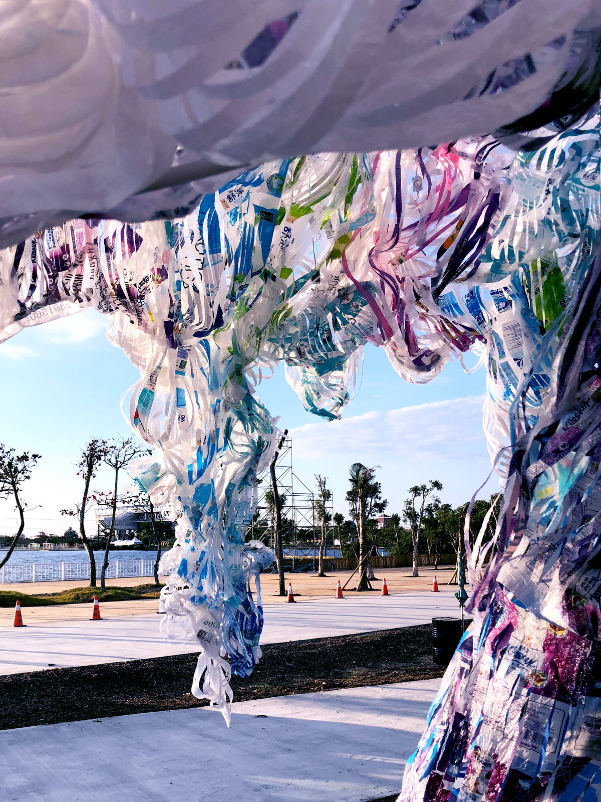

”Dreamy Tide“
What is this? A wave? A tree? A starry sky?
Is there right or wrong?
Julia believes that everything is interdependent and interchangeable. Handmade with hundreds of used plastic bags, this artificial wave questions today’s artificial world and its social values.This artificial wave is handmade with hundreds of used plastic bags. Its lengthy process might seem excessive in this fast-paced world. Some might wonder if it is worthwhile. What is worthwhile? What is art? If art is seen as garbage when unappreciated, would garbage be art when appreciated? Do solid qualities exist, or are they based on fluid perceptions? Which is more shocking - animals dying from consuming plastics, or humans consuming problems? Which is more unsettling - having one’s own stance or following the masses? In this artificial world, what do you believe in?